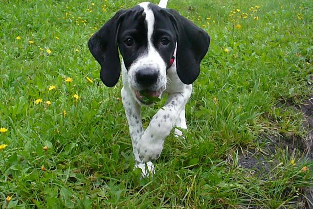

You've heard of trans-gender, but have you heard of trans-species? I was born a puppy-dog in a human body. Unfortunately, there is no surgery available for people like me. I am forever trapped in this foreign body, dreaming of frolicking through fields of flowers, chasing butterflies through the woods, and running through streams. Instead, I frolick through noisy grocery stores, chase filthy buses, and run down crowded city streets. There is no joy for a puppy dog trapped in the inferior body of a human. Sigh.